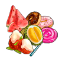
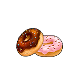
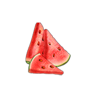
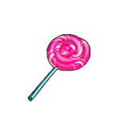
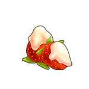
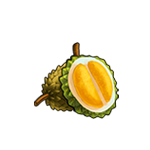

Получено: файл; исходный URL. Иллюстрация в отдельной статье ViveR_9 «Вкусная коллекция»; исходный файл без перекодирования. Авторство отдельно не установлено. Страница: источник.

Вкусная коллекция
Браузерная социальная версия; историческая статья; дата редакции неизвестна- Тип
- Коллекции
- Версия и дата
- Браузерная социальная версия; историческая статья; дата редакции неизвестна
Элементы коллекции















Данные по источнику · Браузерная социальная версия · историческая статья; дата редакции неизвестна
Предварительно: один материал, требуется сверка. Требуется сверка.
- Состав (источник Zombie-island)
- Пончики; Арбуз; Леденец; Клубника; Дуриан.
- Награда (источник Zombie-island)
- 1 Погремушка; 350 Опыт.
- Вкусную коллекцию можно найти в сокровищах и ценностях
- Леденец; Большой леденец; Конфета; Трюфель; Сладкий подарок; Зомбилетто; Дерево страсти; Цирковой шатер; Новогодняя елка за дубл; Осенний сюрприз 4; Валентинка; Сладкий орешек; Халявное; День защиты детей; Шоколадное сердце.
- Вкусную коллекцию можно выиграть в рулетке
- Кукольный театр.
- Вкусную коллекцию могут добыть Звездочеты
- Звездочет; Звездочет за зомбаксы.
- Вкусная коллекция используется для строительства
- Батиплан; Зомби-Кактус.
- Вкусная коллекция попадается при колдовании Палочками дома на вещи
- Палочка-выручалочка.
Данные по источнику · браузерная версия; платформа в ответе не уточнена · Дата на странице (формат не уточнён): 01/04/2015
Предварительно: Ответ справочного сайта; достоверность и независимость от других фанатских источников не установлены. Возможны различия редакций и версии.. Требуется сверка.
- Ответ источника
- Вкусная коллекция в Зомби Ферма после сбора может принести игроку погремушку и 350 баллов опыта. Без нее нельзя построить батиплан и зомби-кактус. Леденцы, пончики, дурианы, арбузные дольки, клубнику, входящие в состав этой коллекции, часто находятся в некоторых ценных предметах, в том числе в конфетах и трюфелях. Иногда элементы коллекции встречаются в валентинках, игрушках, сладком подарке. Часто игроки выигрывают ее в рулетке Кукольный театр или получают после выполнения задания Пришло время. Также игрок может отправить на поиски коллекции звездочетов (бесплатно или за зомбобаксы).
Данные по источнику · браузерная версия; платформа не указана · дата редакции не установлена
Предварительно: Содержимое списка: изображения и колонки могут терять смысл при извлечении текста; отдельная страница и дата не проверены. Подписи alt иногда ошибочны.. Требуется сверка.
- Текст карточки из каталога
- 350 опыта и 1 погремушка Пончики Арбуз Леденец Клубника Дуриан Где можно найти: В игрушках, трюфелях, сладких подарках и зомбилетто Могут добыть зомби-звездочеты
Данные по источнику · Браузерная версия ВКонтакте; редакция не установлена · 05.10.2018 — дата публикации; дата последующей редакции неизвестна
Предварительно: Прочитана фанатская страница; вероятность находки и точная редакция игры не указаны. Схожесть с другими справочниками не установлена; независимость не предполагается.. Требуется сверка.
- Состав
- Пончики; Арбуз; Леденец; Клубника; Дуриан.
- Обмен
- 1 Погремушка и 350 опыта.
- Получение
- Рулетка Кукольного театра; задания «Пришло время», «Плюшевое сердце»; ценности, включая Осенний сюрприз, Шоколадное сердце, Фруктовый лёд, Сладкий орешек и Перстень Капитана. Перечислены Звездочёт и Звездочёт с мозгами.
- Палочками
- Октавий, «Осторожно — дикий зверь!», Пончик-победитель, Почта Любви.
- Строительство
- Упомянуты Зомби-Кактус, Дедушкины сани, Яхта, Батиплан, Мавзолей, Карета, варианты Праздничной и Санок Слона.
Связанные сущности
нет проверенных связей — требуется сверка.